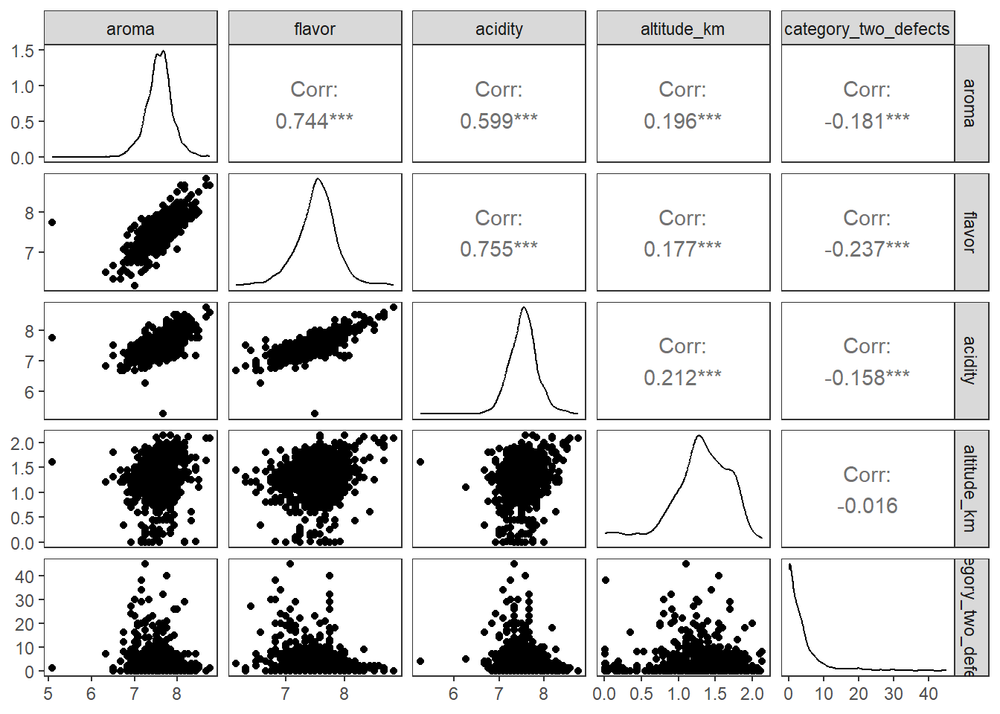
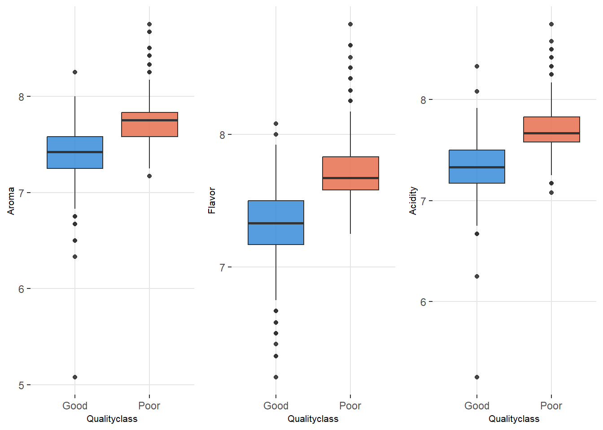
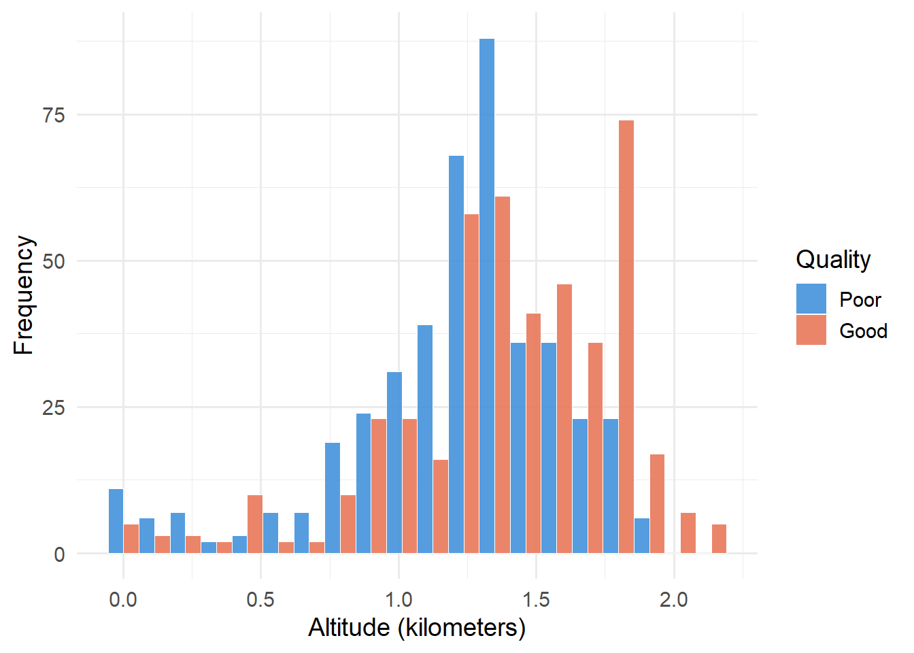
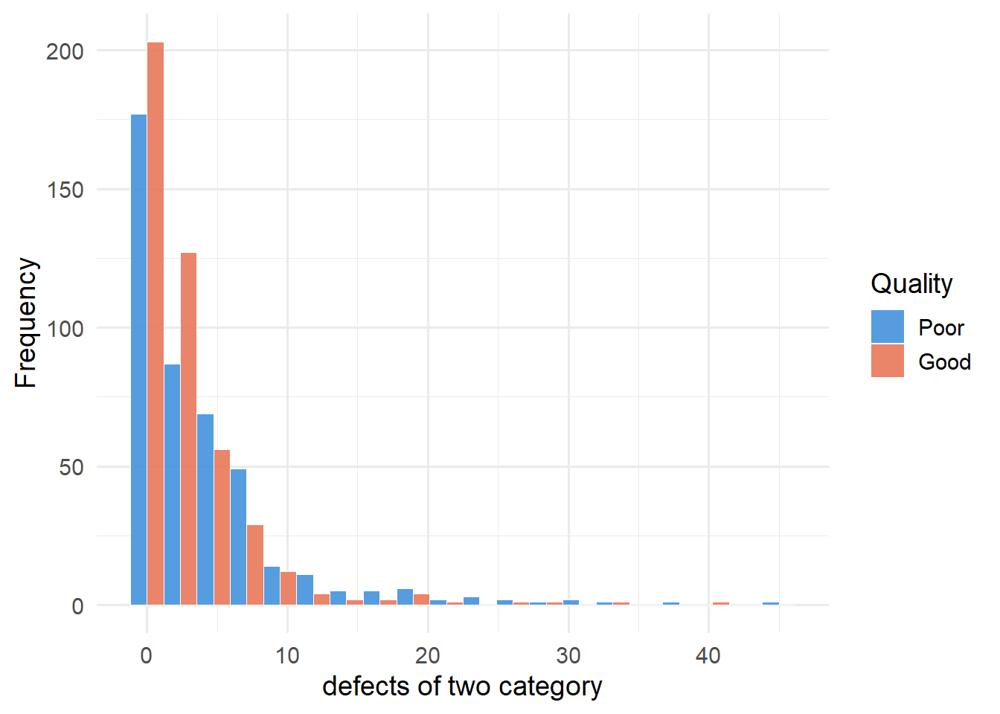
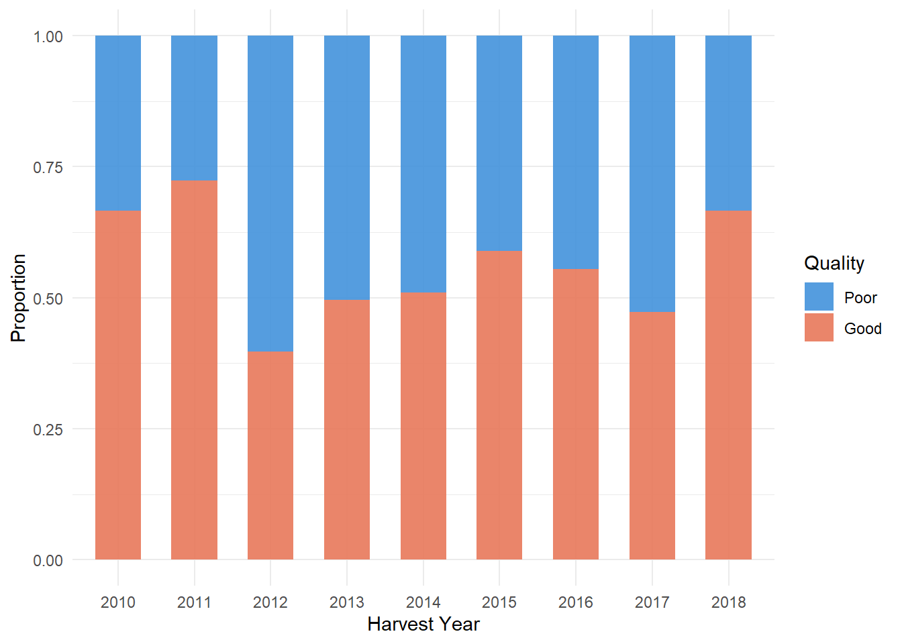
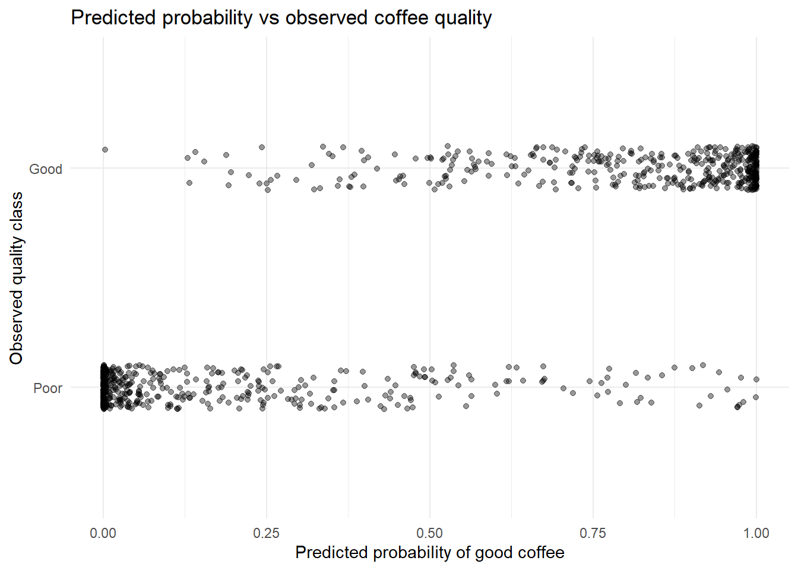
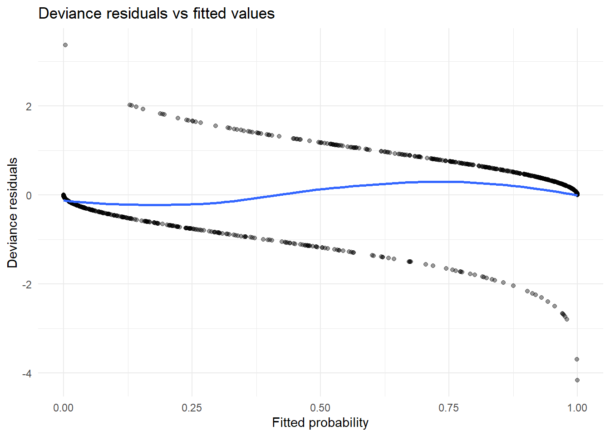
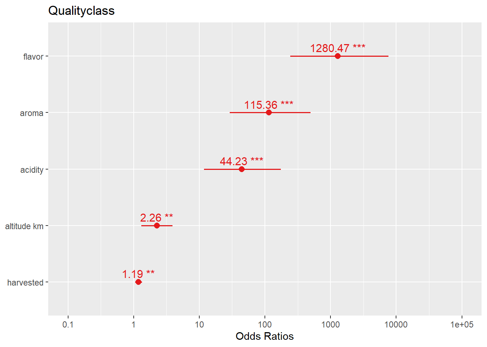

| Variable | Category | Frequency |
|---|---|---|
| Qualityclass | Poor | 436 |
| Qualityclass | Good | 444 |
Group_11_Analysis
EDA Part
Introduction
Coffee quality is a key link connecting producer profits and consumer experience. It not only directly determines market value, but also affects the sustainable development of the coffee industry. This study relies on the real production records of the Coffee Quality Database (CQD), focusing on the three core sensory indicators of aroma, flavor, and acidity, as well as key production characteristics such as the number of category_tow_defects, average planting altitude, and harvest year. We conducted a systematic exploratory analysis of the data and constructed a generalized linear model (GLM), which clearly revealed the direction and strength of the impact of each feature on coffee quality classification. The research results provide guidance for producers to help improve coffee quality.
We systematically processed the original coffee dataset to ensure the reliability of subsequent modeling and analysis.
Firstly, we check the data structure and missing values, and remove invalid samples with missing key variables. Then, outlier screening was performed on the average altitude. Through visualization, it was found that there were two extreme values exceeding 100000 meters, which obviously do not match the actual coffee cultivation and have been removed. Further examination through histograms and boxplots revealed that there were 12 extreme samples with elevations exceeding 2500 meters, which were also deleted.
In order to standardize the numerical scale, we converted the average altitude from meters to kilometers. Subsequently, unnecessary columns were removed and the coffee quality variable was converted into a factor variable.
Exploratory Analysis
Table 1 shows the frequency of categorical variable. The variable Qualityclass is a binary categorical variable, consisting of two levels: “Good” (high-quality coffee) and “Poor” (low-quality coffee). The sample distribution is highly balanced, with 444 high-quality coffee samples (accounting for 50.5%) and 436 low-quality coffee samples (accounting for 49.5%). There is no problem of category imbalance, which can ensure the stability of subsequent models.
| Variable | Mean | Median | SD | Min | Max | IQR |
|---|---|---|---|---|---|---|
| aroma | 7.57 | 7.58 | 0.32 | 5.08 | 8.75 | 0.33 |
| flavor | 7.52 | 7.58 | 0.33 | 6.17 | 8.83 | 0.42 |
| acidity | 7.54 | 7.50 | 0.31 | 5.25 | 8.75 | 0.42 |
| category_two_defects | 3.51 | 2.00 | 5.24 | 0.00 | 45.00 | 4.00 |
| harvested | 2013.70 | 2014.00 | 1.81 | 2010.00 | 2018.00 | 3.00 |
| altitude_km | 1.30 | 1.31 | 0.41 | 0.00 | 2.14 | 0.50 |
Table 2 shows the descriptive statistics of the key quantitative variables of coffee samples, including three sensory quality indicators, one defect count indicator, one harvest year indicator and one indicator of average planting altitude.
Aroma scores fall in a moderate-to-high range with a mean value of 7.57 and a median value of 7.58, indicating a highly similar distribution. The standard deviation is only 0.32, with minimal fluctuations, indicating that there is not much difference in aroma scores between samples, and the overall concentration is at a relatively high level.
Flavor scores is Similar to the aroma performance, which remains stable and concentrated at a medium to high level.
Acidity also maintains a moderate-to-high scoring level, with a mean of 7.54 and a median of 7.58, while the standard deviation is 0.31, which is the smallest fluctuation among the three sensory indicators, indicating that acidity is the most stable performance.
The mean number of category_tow_defects is 3.51, but the median is only 2.00, the standard deviation is as high as 5.24 and the maximum value reaches 45.00, indicating a significant right bias in the data. Most samples have fewer defects, but there are a few extreme samples with extremely many defects.
The harvest years are concentrated between 2010 and 2018, with a standard deviation of 1.81, indicating a small sample time span and compact year distribution.
The average altitude is 1.30km, the median is 1.31km, and the distribution is approximately symmetrical. The standard deviation is 0.41, with a maximum value of 2.14km and a minimum value of 0.00km, indicating that the sample covers coffee planting areas from low to high altitudes, and is generally concentrated at a suitable planting height of around 1.3km.
In summary, the mean and median of the three sensory indicators are close, the standard deviation and IQR are small, and the distribution is symmetrical and concentrated. The categorization shows a right skewed feature.
The above is a descriptive statistical summary of the research data. Based on this, visual analysis is used to further visualize the distribution patterns and data characteristics of each variable.

This pair plot comprehensively presents the distribution and correlations of these variables.
The diagonal density curve shows that the three sensory indicators of aroma, flavor, and acidity exhibit an approximately symmetrical unimodal distribution. There is a double peak in the harvest year. The number of category_two_defects exhibits a clear right skewed long tail feature.
The correlation coefficients between aroma, flavor, and acidity are all above 0.6, indicating a strong positive correlation among the three. The average altitude is weakly positively correlated with sensory indicators, while the defects is weakly negatively correlated with sensory indicators Overall, there may be collinearity issues within sensory indicators.

This set of boxplots clearly shows the distribution differences between high-quality and low-quality coffee in three sensory indicators. The aroma, flavor, and acidity scores of high-quality coffee are generally higher, and the data is more concentrated and stable. Low quality coffee has lower scores, greater fluctuations, and more outliers in low scores. The characteristics of the two sets of outliers are also significantly different, with higher values in the high-quality group and lower values in the low-quality group. Overall, these sensory indicators can effectively distinguish coffee quality and provide intuitive basis for subsequent statistical analysis.

Figure 3 performs that altitude distribution of coffee of different qualities shows significant differences. High quality samples are mainly concentrated at altitudes of 1.5-1.8 kilometers, while low-quality samples are more concentrated at altitudes of 1.0-1.3 kilometers, with an overall bias towards low altitudes. The proportion of high-quality coffee is higher in high-altitude (>1.5 kilometers) areas, while the frequency of low-quality coffee is higher in low altitude (<1.2 kilometers) areas. This indicates that the higher the altitude, the more likely the coffee quality is to improve, providing intuitive evidence for the positive correlation between altitude and coffee quality.

Figure 4 shows the distribution of the number of category_two_defects in coffee of different qualities varies significantly. Overall, the number of defects shows a right skewed distribution, with most samples concentrated in the low range of 0-5 defects, and a peak formed on the left side. High quality coffee is almost entirely concentrated on 0-5 defects, and as the number of defects increases, the sample frequency rapidly decreases. In contrast, low-quality coffee has a wider distribution of defects, with samples containing 0-10 defects, and a significantly higher number of high defect segments. This difference clearly indicates that the number of defects can effectively distinguish coffee quality, and samples with fewer defects are more likely to belong to the high-quality group.

Figure 5 shows the proportion distribution of coffee quality in each year from 2010 to 2018. From the plot, it can be seen that the quality of coffee fluctuates greatly in different years and lacks a stable trend. For example, in 2011, high-quality coffee accounted for about 75%, while in 2012, low-quality coffee exceeded 60%. This indicates that the harvest year has little to do with coffee quality and has limited impact on predicting quality.
Exploratory analysis focuses on multidimensional visualization of coffee quality related variables, clarifying the direction of variable selection for subsequent modeling.
FDA Part
Initial logistic regression model
| Term | Estimate | Std. Error | z value | p value |
|---|---|---|---|---|
| (Intercept) | -475.110 | 126.077 | -3.768 | 0.000 |
| aroma | 4.756 | 0.722 | 6.591 | 0.000 |
| flavor | 7.175 | 0.876 | 8.193 | 0.000 |
| acidity | 3.805 | 0.687 | 5.535 | 0.000 |
| category_two_defects | 0.019 | 0.029 | 0.677 | 0.499 |
| altitude_km | 0.809 | 0.279 | 2.898 | 0.004 |
| harvested | 0.176 | 0.062 | 2.855 | 0.004 |
A binomial GLM with logit link was fitted to investigate how sensory attributes, defect counts, altitude groups and harvest year influence the probability of a coffee batch being classified as good quality.
To assess whether the predictors included in the initial logistic regression model exhibit problematic multicollinearity, Variance Inflation Factors (VIFs) were calculated. This is particularly relevant because the exploratory analysis suggested relatively strong positive correlations among aroma, flavor and acidity.
Model selection
# stepwise selecting model via AIC
null_model <- glm(Qualityclass ~ 1,
data = coffeedata,
family = binomial)
step_model <- step(null_model,
scope = list(lower = null_model, upper = model_full),
direction = "both",
trace = TRUE)Start: AIC=1221.87
Qualityclass ~ 1
Df Deviance AIC
+ flavor 1 641.37 645.37
+ aroma 1 767.78 771.78
+ acidity 1 782.03 786.03
+ altitude_km 1 1179.97 1183.97
+ category_two_defects 1 1205.50 1209.50
<none> 1219.87 1221.87
+ harvested 1 1218.04 1222.04
Step: AIC=645.37
Qualityclass ~ flavor
Df Deviance AIC
+ aroma 1 569.75 575.75
+ acidity 1 590.91 596.91
+ altitude_km 1 621.54 627.54
<none> 641.37 645.37
+ harvested 1 640.09 646.09
+ category_two_defects 1 641.33 647.33
- flavor 1 1219.87 1221.87
Step: AIC=575.75
Qualityclass ~ flavor + aroma
Df Deviance AIC
+ acidity 1 530.15 538.15
+ altitude_km 1 560.70 568.70
+ harvested 1 562.90 570.90
<none> 569.75 575.75
+ category_two_defects 1 569.62 577.62
- aroma 1 641.37 645.37
- flavor 1 767.78 771.78
Step: AIC=538.15
Qualityclass ~ flavor + aroma + acidity
Df Deviance AIC
+ altitude_km 1 523.79 533.79
+ harvested 1 524.48 534.48
<none> 530.15 538.15
+ category_two_defects 1 529.79 539.79
- acidity 1 569.75 575.75
- aroma 1 590.91 596.91
- flavor 1 616.79 622.79
Step: AIC=533.79
Qualityclass ~ flavor + aroma + acidity + altitude_km
Df Deviance AIC
+ harvested 1 515.73 527.73
<none> 523.79 533.79
+ category_two_defects 1 523.59 535.59
- altitude_km 1 530.15 538.15
- acidity 1 560.70 568.70
- aroma 1 576.02 584.02
- flavor 1 613.44 621.44
Step: AIC=527.73
Qualityclass ~ flavor + aroma + acidity + altitude_km + harvested
Df Deviance AIC
<none> 515.73 527.73
+ category_two_defects 1 515.26 529.26
- harvested 1 523.79 533.79
- altitude_km 1 524.48 534.48
- acidity 1 550.98 560.98
- aroma 1 573.18 583.18
- flavor 1 604.18 614.18summary(step_model)
Call:
glm(formula = Qualityclass ~ flavor + aroma + acidity + altitude_km +
harvested, family = binomial, data = coffeedata)
Coefficients:
Estimate Std. Error z value Pr(>|z|)
(Intercept) -467.46783 125.38385 -3.728 0.000193 ***
flavor 7.15498 0.87780 8.151 3.61e-16 ***
aroma 4.74805 0.72293 6.568 5.11e-11 ***
acidity 3.78935 0.68760 5.511 3.57e-08 ***
altitude_km 0.81379 0.27869 2.920 0.003499 **
harvested 0.17277 0.06147 2.811 0.004940 **
---
Signif. codes: 0 '***' 0.001 '**' 0.01 '*' 0.05 '.' 0.1 ' ' 1
(Dispersion parameter for binomial family taken to be 1)
Null deviance: 1219.87 on 879 degrees of freedom
Residual deviance: 515.73 on 874 degrees of freedom
AIC: 527.73
Number of Fisher Scoring iterations: 7Multicollinearity check
| Variable | VIF |
|---|---|
| flavor | 1.097 |
| aroma | 1.074 |
| acidity | 1.056 |
| altitude_km | 1.076 |
| harvested | 1.090 |
Table X presents the VIF values for all predictors included in the initial model. Overall, the sensory variables show comparatively larger VIF values than the remaining predictors, which is consistent with the correlation patterns observed in the exploratory analysis. These results suggest that multicollinearity should be taken into account in subsequent model refinement.
Visualising model fit
Fitted Probability vs Observed
coffeedata$pred_prob <- predict(step_model, type = "response")
ggplot(coffeedata, aes(x = pred_prob, y = factor(Qualityclass))) +
geom_jitter(height = 0.1, alpha = 0.4) +
labs(
title = "Predicted probability vs observed coffee quality",
x = "Predicted probability of good coffee",
y = "Observed quality class"
) +
theme_minimal()
Residual Plot
res <- residuals(step_model, type = "deviance")
fit <- fitted(step_model)
ggplot(data.frame(fit, res), aes(x = fit, y = res)) +
geom_point(alpha = 0.4) +
geom_smooth(se = FALSE) +
labs(
title = "Deviance residuals vs fitted values",
x = "Fitted probability",
y = "Deviance residuals"
) +
theme_minimal()`geom_smooth()` using method = 'loess' and formula = 'y ~ x'
Interpretation of model coefficients
Odds ratio
